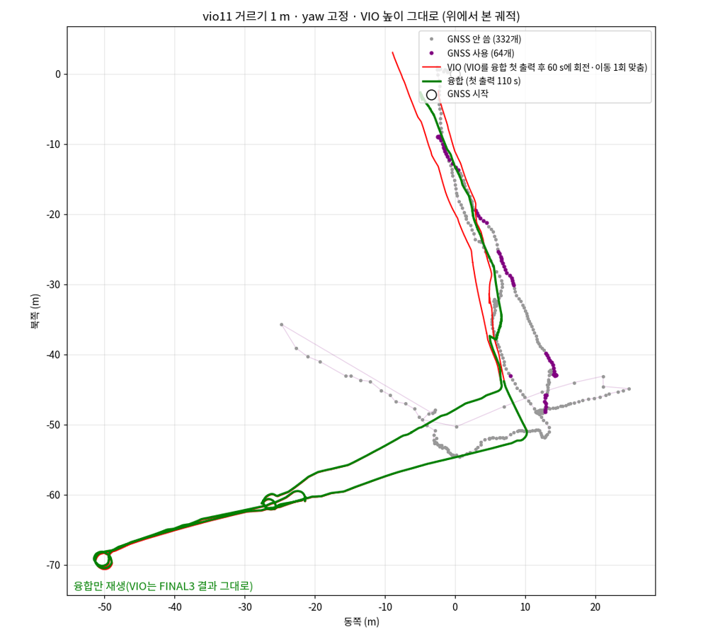
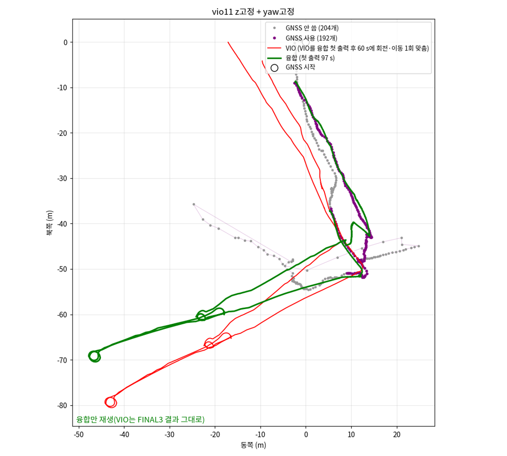

⑥ 11/19 건물 왕복 — VIO와 GNSS 융합
11/19 15:40 RTK 모드로 녹화(vio11) · 약 10분 · 건물 밖 → 실내 복도 왕복 → 밖. 노트북 재생 결과(Pi5 VIO 구성, 카메라–IMU +2.49° 보정). 보드 설정은 바꾸지 않음.
핵심
- GNSS는 DGNSS 391개 · 신호 없음 232개(건물 안) · RTK FIX 0개, 정확도(hAcc) 약 10 m.
- GNSS 10초 이동이 VIO와 1 m 넘게 다르면 거름 → 건물 앞에서 천천히 밀리던 GNSS를 막아 융합 궤적이 VIO처럼 원래 길로 돌아옴.
- 방향(yaw)은 처음 정렬 후 천천히만 바뀌게, 높이(z)는 VIO 그대로.
종합 영상
왼쪽: 휴대폰 영상(작은 화면 = 로봇 OAK 카메라) · 오른쪽: 위에서 본 궤적, 빨강 ▲ VIO · 초록 ▲ GNSS 융합 · 아래: 속도와 위치 보정 상태(파랑 정렬 전 · 보라 GNSS 사용 · 회색 GNSS 거름 · 진회색 GNSS 없음)
설정
| 항목 | 값 | 뜻 |
|---|---|---|
| 거르기 | 10초 이동 차이 1 m | GNSS가 10초 동안 움직인 거리·방향이 VIO와 1 m 넘게 다르면 그 GNSS는 안 씀 (수평 x·y만 비교) |
| 60초 비교 | 4 m | 천천히 밀리는 GNSS를 한 번 더 거름 |
| 방향(yaw) | 처음 정렬 후 1° 묶음, 120초에 걸쳐 천천히 따라감 | GNSS가 방향을 갑자기 돌리지 못하게 |
| 높이(z) | VIO 높이 그대로 | GNSS는 높이를 건드리지 않음 |
| 늦게 온 VIO | 버리지 않고 이어 붙임 | 제자리 빠른 회전 때 VIO가 늦어 방향을 잃던 문제(17° → 2°) |
결과 — 거르기 1 m vs 4 m
| 항목 | 거르기 1 m (위 영상) | 거르기 4 m |
|---|---|---|
| 융합에 쓴 GNSS | 64개 | 192개 |
| 정렬(첫 출력) | 110초 | 97초 |
| 건물 문(196초·398초)에서 융합 − VIO | 0.5 · 0.6 m (VIO 모양 유지) | 3.1 · 2.9 m (GNSS에 끌림) |
| 끝에서 융합 − GNSS | 7.2 m | 0.4 m |
| 1초 최대 보정 | 1.45 m | 1.40 m |


남은 문제
- GNSS 정확도가 약 10 m라 끝에서 융합과 GNSS가 7 m 다른 것 중 어느 쪽이 맞는지는 RTK FIX 녹화로 확인해야 함.
- VIO 높이가 나갈 때 80 m에 약 1 m 올라갔다 돌아올 때 내려옴 — 길 경사인지 미확정(정지 구간 확인으로 VIO 세계 기울어짐은 아님).
- 녹화 1개 결과, 휴대폰 영상 시간은 움직임 비교로 맞춤(약 ±1초). 보드(Pi5)에는 아직 반영 안 함.